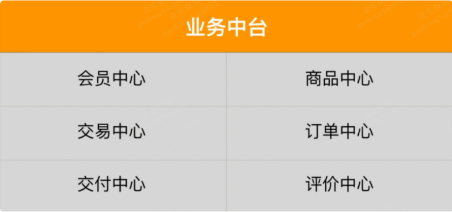
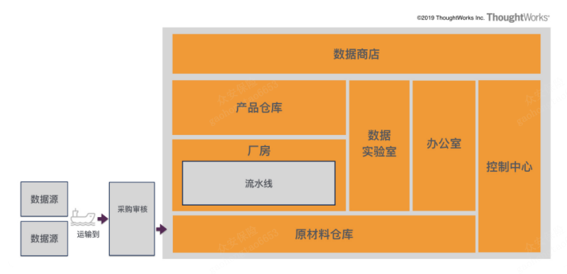
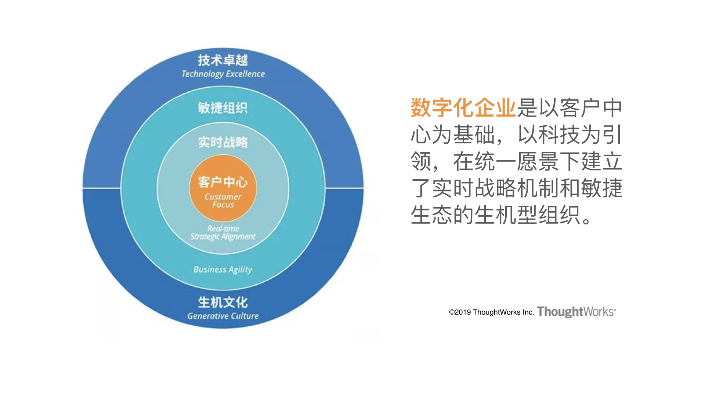

而背后支撑这个机制得以实现的，就是 Supercell 经过 6 年时间沉淀下来的游戏开发过程中那些公共的、通用的游戏素材和算法。基于这些像乐高积木一样的基础素材和算法，才可以同时支持几个小团队在几周时间内像搭积木一样快速研发出一款新游戏。中台的优势，将通用的功能做成各种各样的积木，特定的场景只需要组装就可以了
所有的中台都是业务中台

数据中台为什么这么火热？我总结下来主要是这么几个原因。
- 见效快。目前大部分传统企业的问题还在于数据不通，“数据孤岛”现象比较严重，数据中台的建设对于痛点的解决直接，驱动力强。
- 组织调整负担小。一般来说，有一定规模的企业都已经有了大数据团队或是 BI 团队，这个团队自然就承载着相关的职能，不需要再做大的组织调整。
- 有一定技术基础储备。大部分企业都进行了多年的数据仓库建设，或是随着前几年大数据的浪潮，已经构建了多年的大数据技术平台。
- 大势所趋。大家都在讲 DT（Data Technology）时代，对于数据的价值，企业的认识也越来越深刻，大家已经意识到数据不再只是一种运营辅助分析的工具，而逐渐成为企业的核心资产和竞争力。
数据中台和业务中台区别
业务中台就是在产生数据，数据中台是做数据的二次加工，并将结果再服务于业务，为业务进行数据和智能的赋能。
业务中台与数据中台相辅相成，互相支撑，互为输入输出。业务中台承载了企业的通用业务能力，为多业务线赋能；数据中台通过对于业务数据的二次加工，并反馈回业务中台，为业务进行数据和智能方面的赋能。两者的紧密配合一起为企业构建起了商业战场强大的后方炮火群，这也就构成了最著名的业务数据双中台模式。
中台定义
中台就像是在前台与后台之间添加的⼀组“变速齿轮”，将前台与后台的速率进行匹配，是前台与后台的桥梁和润滑剂。它为前台而生，易于前台使用，将后台资源顺滑地通过前台导流向用户，支撑企业更好地响应用户
企业级能力复用平台。
- 企业 。中台建设的事情并不是一个技术问题，而是一个要上升到企业架构的问题。做中台建设的时候，一定是跳出单条业务线、站在企业整体视角来审视业务全景。
- 能力定义了中台主要承载的对象，能力的抽象解释了各种各样中台的存在；
- 复用 定义了中台的核心价值，传统的平台化对于易复用性和前台的用户体验并没有给予足够的关注，中台的提出和兴起，让人们通过可复用性将目光更多的从平台内部设计转换到平台对于前台业务的支撑上；
“复用”是中台更加关注的目标；“可复用性”和“易复用性”是衡量中台建设好坏的重要指标；“业务响应力”和“业务满意度”是考核中台建设进度的重要标准。
- 平台 定义了中台的主要形式，区别于传统的应用系统拼凑的方式，通过对于更细粒度能力的识别与平台化沉淀，实现企业能力的柔性复用，更好地支撑前台业务。
数据中台定义
数据中台比喻成一个数据工厂，通过收集到原材料仓库，经过厂房流水线的数据加工，最终作为数据产品进入到产品仓库，通过数据商店，以各种方式（例如数据 API 的方式）对于前台或是业务中台赋能，整个过程通过控制中心进行协调调度。


Pace-Layered Application Strategy
企业构建的系统从 Pace-Layered 的角度来看可以划分为三类：SOR（Systems of record ），SOD（Systems of differentiation）和 SOI（Systems of innovation）。每一类的系统都有着不同的变化速率，因此也会有不同的生命周期，适合不同的技术架构和不同的开发过程，甚至是采用不同的投资模式。